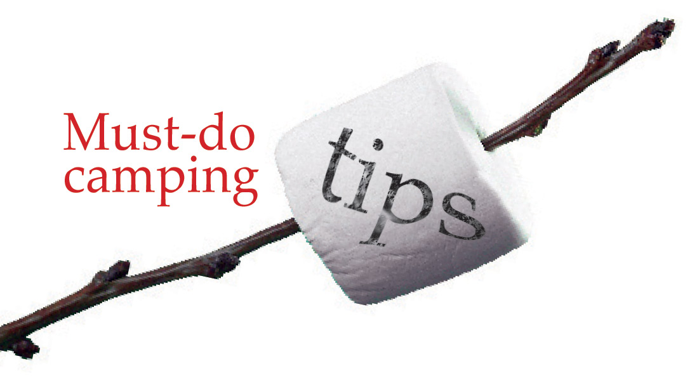

Family Camping Tips

There is nothing on earth like a family camping trip to bring the family together. This is a great time to get away from the world, enjoy evening chats, campfire stories, and actually get to know one another without the constant distractions of technology invading your family time. Make sure you leave the mp3 players, televisions, laptops, and cell phones at home or at the very least turned off as much as possible so that you can really enjoy the spirit of getting back to nature.
If you've never experienced a family camping trip or it has been a while there are a few things you will want to bring to make your time outdoors a great deal more pleasant. The first thing on your must-bring list is sunscreen. This is essential not only in protecting the skin of all members of your family but also in keeping spirits up. No one is in a good mood when suffering the effects of sunburn.
Another thing you will want to have readily and liberally available is bug repellent. There are many forms of bug repellent available and it's probably a great idea to bring a few along with you for backup. In addition to being uncomfortable, bugs carry potentially deadly diseases. You want to take every possible precaution against them.
Make sure you bring some entertainment in the event of rain. No one wants to think about rainy days on camping trips but they have been known to happen. Unfortunately tight quarters with the entire family can rob you of those happy feelings you may be expecting from your travels. If you bring along board games, craft projects, and other activities to keep the family busy, even when it's raining you will have a better overall experience. Best case scenario, they never get unpacked but it's nice to have them on hand if they are needed.
One final thing that you will want to make sure you do during your camping trip is to add something special for each member of the family that comes along. Give them all their own disposable camera, gallon size freezer bag, and notebook so that they can write about the experience, collect small treasures to take home with them.